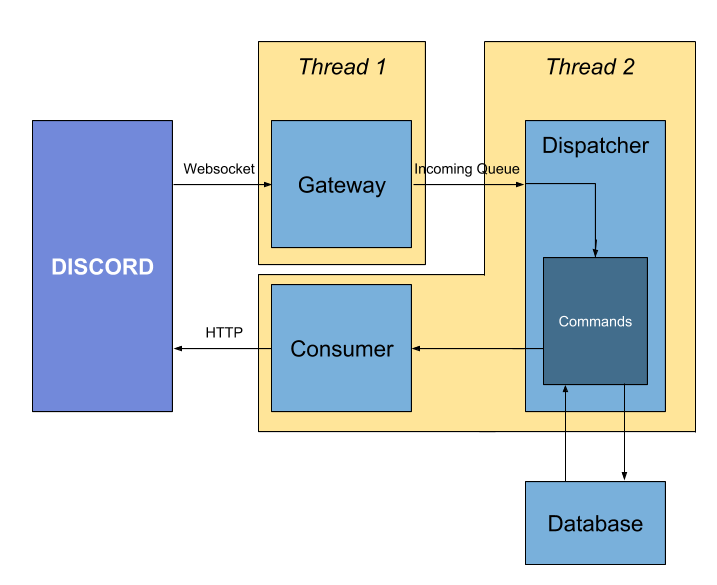

Charlotte
Contents:
commands package
database package
discord package
dispatcher module
scripts package
Charlotte
Docs
»
Welcome to Charlotte’s documentation!
View page source
Welcome to Charlotte’s documentation!
¶
Systems:
¶

Contents:
commands package
Submodules
commands.activity module
commands.say module
commands.store module
commands.top module
commands.unknown_command module
Module contents
database package
Submodules
database.base_model module
database.config module
database.database module
database.member module
database.message module
Module contents
discord package
Submodules
discord.consumer module
discord.gateway module
discord.gateway_connection module
discord.gateway_exceptions module
discord.message module
discord.payload module
Module contents
dispatcher module
scripts package
Submodules
scripts.init_tables module
Module contents
Indices and tables
¶
Index
Module Index
Search Page